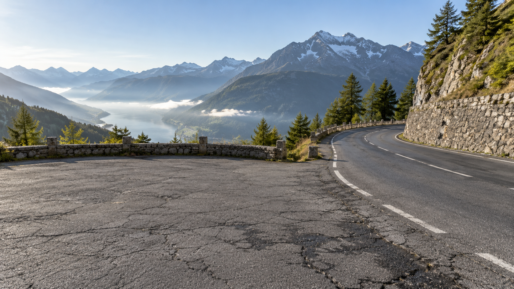
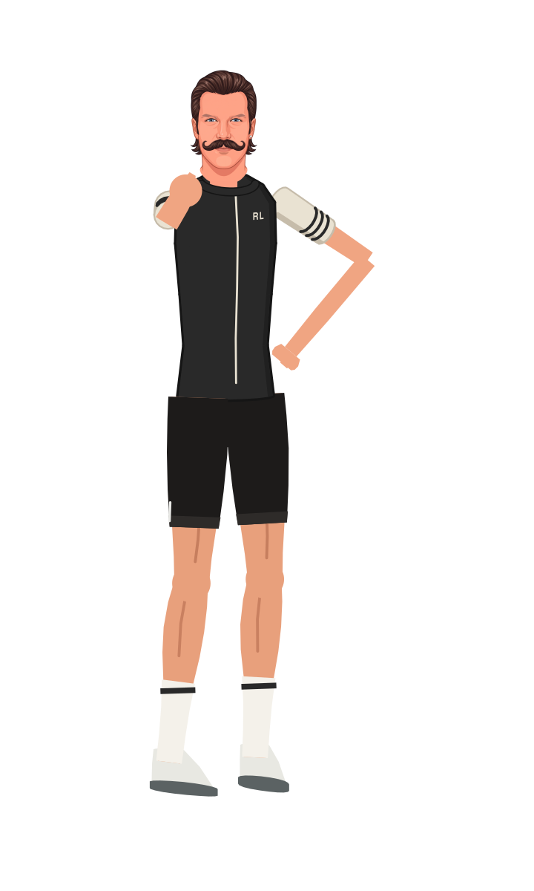

Hold your line.
Read the group.
Make your riding predictable before you try to make it fast. Practise positioning, communication and changes of pace with an experienced group. [1]


Pack Skills & Race Tactics
Practise group riding with an experienced group. Ride predictably, communicate hazards, avoid overlapping wheels, and look ahead. The safe gap changes with speed, surface, visibility, and the riders around you. [1]
Keep every move within the space available to you. Wind and corners change the group’s shape; they do not give you permission to cross the centre line or squeeze through a gap.
Choose your position before an exposed section or climb when you can do so safely. If you lose the group, return to your pacing and fueling plan instead of chasing every surge.
| Situation | Action |
|---|---|
| Hazard ahead | Communicate early and leave room |
| Changing speed | Make changes gradually |
| Following a wheel | Avoid overlap and keep space to react |
| Moving through the group | Check space and signal your intention |
A team-camp approach to group practice
Agree before riding
Choose the route, purpose, roles, signals, and regroup point while everyone can hear.
Separate the starts
For a controlled group exercise, stagger starts so groups are not competing for the same road space.
Rehearse the leadout
Agree who does what and where the effort ends. The exercise is coordinated riding, not surprise manoeuvres.
Regroup and review
Discuss timing and communication after the exercise. Repeat only where the route and supervision allow it.